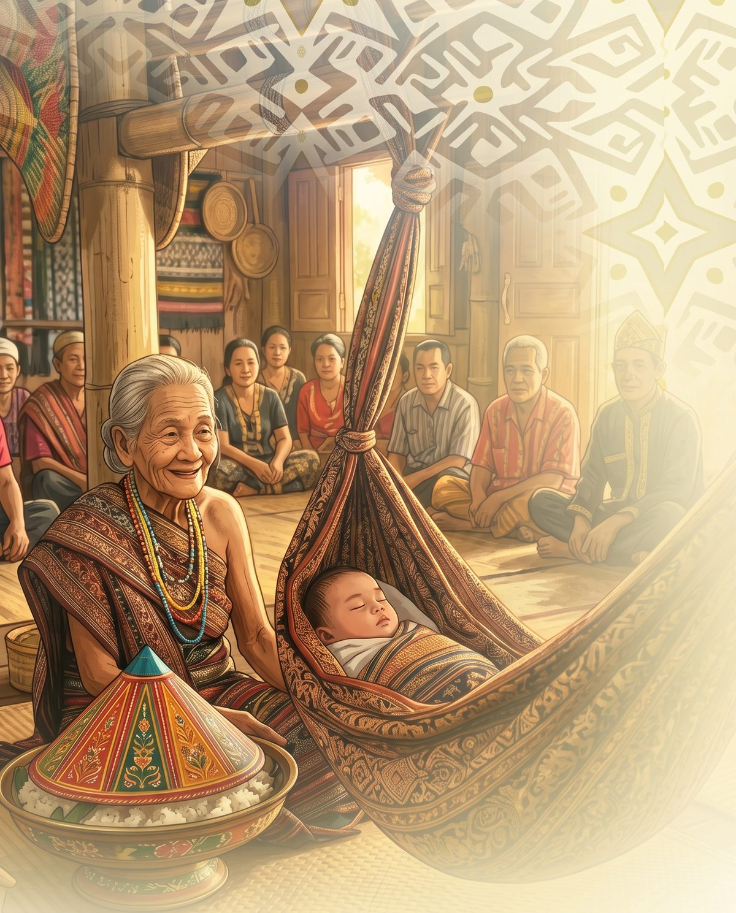
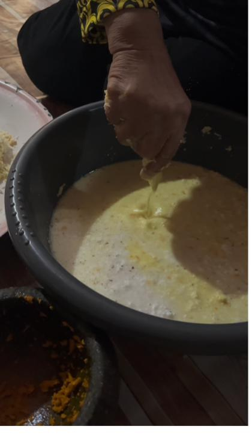
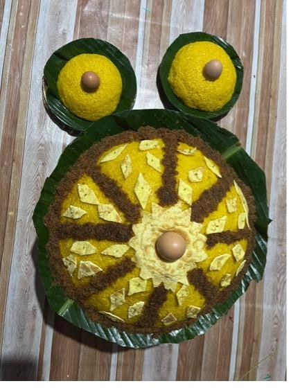
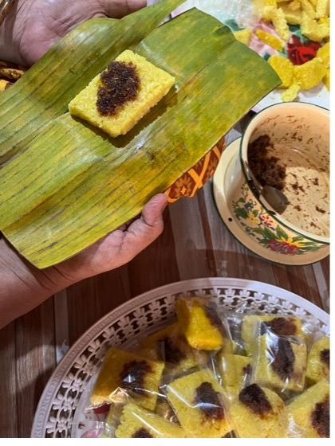

Katalog Pemuliharaan Digital
Dokumentasi gastrosemiotik makanan ritual dalam upacara Pasak Indong (Naik Ayun). Ini prototaip awal untuk menyimpan pengetahuan budaya lisan sebelum ia hilang begitu sahaja.



